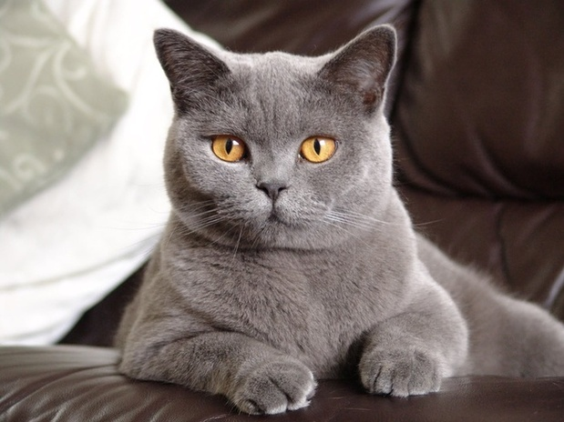

Кто такой метис
Метис – кошка, один из родителей которой является представителем породистой группы или они оба чистокровные
представители разных пород. Некоторые эксперты предлагают считать всех кошек метисами-полукровками на
основании теории об их общем происхождении.
Не все знают, что кошка-метис и кошка-гибрид – два абсолютно
разных вида животных.
1)Метис – это помесь двух пород одного рода. Скрещивание между ними возможно, а
потомство вполне способно к дальнейшему продолжению своей родословной линии.
2)Гибрид кошки предполагает участие в размножении двух особей из разных ветвей
биологического дерева. В живой природе подобное фиксируется редко из-за различного набора генов.
Разнообразие кошек-метисов

Помесь любых пород кошек иногда называют дизайнерскими животными. В отличие от своих собратьев с длинными
родословными линиями,метисы способны сочетать во внешности и характере различные качества родительских
генов.
Для одних главным становится размер, другие демонстрируют первобытные охотничьи навыки, третьи похожи на
декоративную мягкую игрушку с плюшевой шерстью.
Смесь британца и обычной кошки
Естественное умение выживать и адаптироваться к различным внешним факторам у беспородных кошек находится,
пожалуй, на самом высоком уровне. Они неприхотливы, самостоятельны, обладают крепким иммунитетом к
заболеваниям и вполне лояльно относятся к людям.
Замечено, что беспородные питомцы редко стремятся к
одиночеству и очень ценят общение. Особенно это касается тех животных, которые попали в домашние условия в
раннем возрасте. Видимо опыт предков подсказывает им, что кошке веселее и сытнее жить рядом с человеком.
Британская короткошерстная порода – это аборигенные аристократы. Эти кошки самостоятельны, не любят сидеть
на руках и часто уединяются.
Активные игры и другие общие развлечения вызывают у британцев удивление.
Зачем суетиться и бегать за клубком ниток, когда в это время можно спокойно лежать у камина?
1)Кошка-метис британской породы средней величины, с крепким костяком и широкой грудной
клеткой.
2)Мордочка округлая из-за сильно развитых щек и зоны вибриссов
(усов).
3)Окрасы самые разнообразные. У этой породы допускается более 200 видов комбинаций
цвета, поэтому помесь британца и обычной кошки в вариантах расцветок шубки почти не ограничена.У метиса даже
может быть экзотическая сиамская маска колор-пойнт или эффектный серебристый шиншилловый типпинг.
Стремление к одиночеству, характерное для британской породы, у метисов немного притупляется. Чаще всего они
коммуникабельны как обычные кошки, и неплохо поддаются дрессировке.
Это интересно! В детстве и молодости метисы больше тяготеют к поведению, характерному для беспородных
питомцев,а в зрелости и старости у них появляется рассудительность и степенность, присущая британцам.
Смесь британца и тойгера

Кошка-метис, полученная в результате скрещивания британской породы с тойгером, почти всегда рождается с
четким табби-рисунком. Очевидно, что гены бенгальца, который был в числе прародителей тойгера, сказали свое
веское слово.
Родительские породы имеют ряд отличий:
1)Происхождение. Британец представляет
аборигенных долгожителей, а тойгер был выведен всего три десятилетия назад и обладает выставочными правами
только с 2007 года.
2)Окрас. Английская порода допускает более 200 цветовых вариантов, а селекция ее
партнера велась на закрепление «дикого» полосатого окраса.
3)Размер. Средняя упитанная британская кошка
кардинально отличается от миниатюрного декоративного«тигра» с хрупкой конституцией.
Метис «игрушечного тигра» с британцем получается не такой мощный, хотя декоративным питомца назвать нельзя.
Кошка среднего размера, с пропорциональным телом, красивым мехом и «диким» полосатым или пятнистым
орнаментом на шерсти. Контрастность рисунка может быть смазана, хотя присутствует в 90% случаев.
Характер
у метиса не всегда покладистый и общительный – здесь одержали верх чопорность и высокомерие английской
породы.
Еще одна особенность – во втором поколении кошки-метисы теряют индивидуальность и дают потомство,
имеющее внешнее сходство только с одним из родителей.
Смесь британской и сиамской кошки
Мой Сим)))
Метисы британской и сиамской кошки — эффектные красавицы со сплошным окрасом, за который отвечает ген
С, участвующий в формировании окраса колор-пойнт.
Сиамский окрас зависит от температуры тела
животного. Корпус котов теплее, поэтому в этой части тела ген не проявляется. Шерсть на туловище всегда
светлая. Конечности, уши, морда и хвост — прохладнее, поэтому на этих участках шерсть темнее. Для британцев
также характерен сиамский окрас, который передается по наследству.
Помесь сиамца и британца выглядит грузно, имеет массивный костяк и широкую грудь, длинный лапы и
хвост.
Котята наследуют независимый характер и эгоцентризм (от британцев), обидчивость и злопамятство (от
сиамцев). Британский генотип считается доминантным, что нередко выражается в полном сходстве с
аристократической породой.
Характер и содержание метисов
Хотя поведение кошек не регулируется на генном уровне, но черты характера, которые передаются от каждого из
родителей, всегда влияют на повадки питомца.
*Метиса британца и сиамца не стоит заводить в семьях с
маленькими детьми. Велика вероятность, что надоедливые ласки ребенка спровоцируют агрессию. Если британская
половина кошачьей натуры считает необходимым в подобной ситуации удалиться, то азиатская кровь сразу
предлагает нападать и доказывать собственное превосходство над врагом.
*Помесь британца с беспородной кошкой неплохо подойдет активным людям, которые предпочитают тесный контакт с
питомцем. Такой метис будет коммуникабельным, охотно поддержит компанию и с удовольствием поиграет с
хозяином.
Чтобы не ошибиться в выборе котенка-метиса, необходимо ориентироваться на родительские породы,
поскольку нрав взрослого кота обязательно сочетает в себе их черты. А то, в какой пропорции они разовьются,
будет зависеть от воспитания кошки и условий ее содержания.
Достоинства и недостатки
Кошки метисы рождаются от вязки породистой кошки и беспородной, а также от животных разных пород. Такие коты
получают в наследство лучшие характеристики родителей и, как правило, имеют отменное здоровье. Наиболее
распространены помеси британской кошки с обычной, тойгером и сиамцев.
*В первом поколении помеси обычно демонстрируют лучшие качества родительских пород, которые в дальнейшем
теряют наследственное преимущество.
*Относительно здоровья метисов мнения расходятся – они могут обладать
хорошим иммунитетом, но если в родительской паре есть представители с измененным генотипом, возрастает
вероятность рождения больных котят.
*При намеренном скрещивании представителей разных пород можно получить кошку с определенными внешними
признаками.
*То же касается характера и привычек – бездомный бродяга и изнеженный перс никогда не дадут агрессивное
потомство.
Отрицательные свойства выражаются всего двумя позициями:
*не престижно;
*не выгодно.
Владельцами метисов становятся люди с добрым сердцем и открытой душой. Ведь не важно, как выглядит питомец.
Имеет значение только его взгляд и любовь к хозяину, которую не заменит престижная родословная.